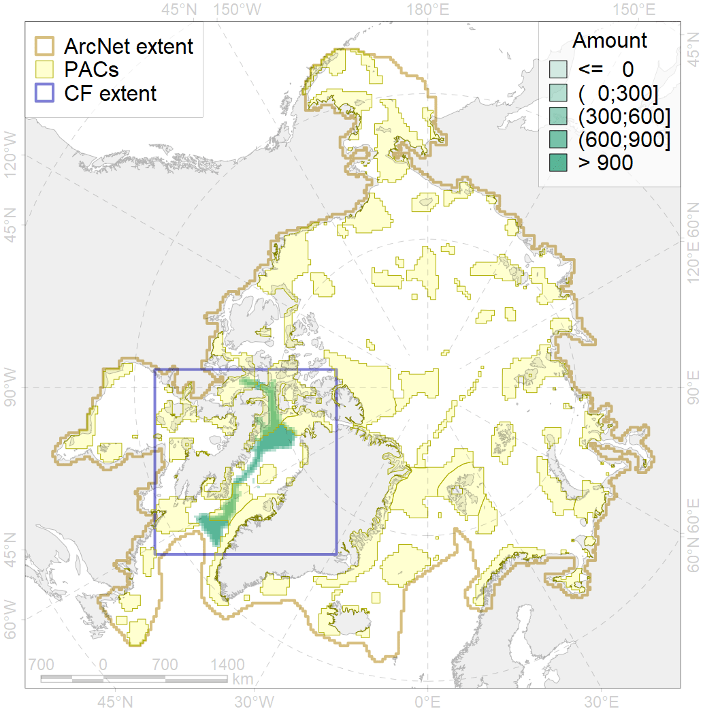
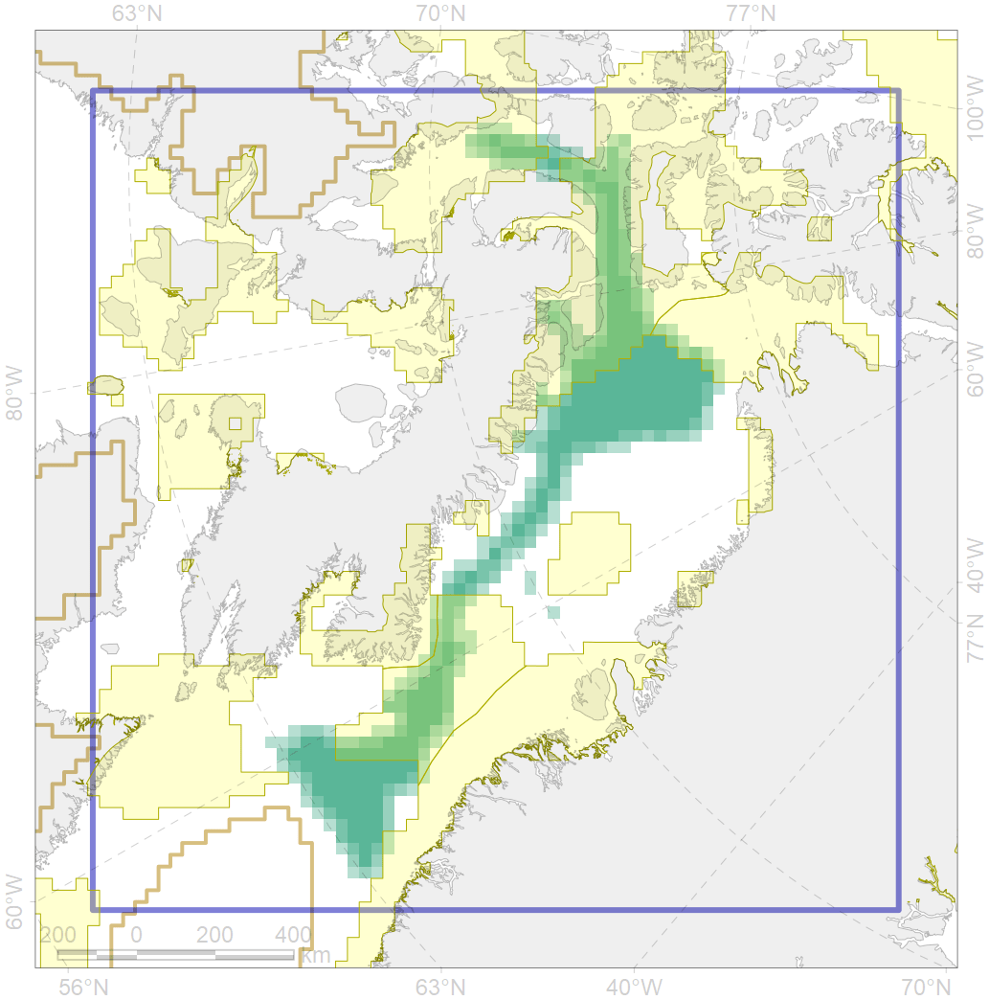

7146

| CF code | 7146 |
| CF name | III.2.2.1. Archipelago slope in Baffin Bay and Lancaster Sound |
| Time Period | At least last 100 years |
| Source(s) | Harris et al., 2014; Carmack, Wassmann, 2006 |
| Seasonality | 1-12 |
| Depth Horizon | Sea floor |
| Methodology | Data obtained from the literature |
| Use Restrictions | Open access |
| Author Name | V. Spiridonov, W. Merritt |
| Notes | |
| Scenario’s Target | 0.05521551 |
| Target Achievement | 0.423 (Scenario: 765.4%) |
| PAC | Share of the Total Amount within the PAC | Share of the Target Achievement for the ArcNet | PAC’s Contribution to the Target Achievement |
|---|---|---|---|
| 44 | 0.1%0.1% | 1.4%2.2% | 0.2%0.3% |
| 45 | 15.2%15.6% | 267.2%273.0% | 34.9%35.7% |
| 46 | 0.3%1.0% | 5.7%17.6% | 0.7%2.3% |
| 51 | 1.3%1.5% | 23.6%28.1% | 3.1%3.7% |
| 52 | 21.6%21.8% | 385.7%389.4% | 50.4%50.9% |
| 65 | 3.7%3.7% | 54.4%54.4% | 7.1%7.1% |
| inner | 42.3%43.8% | 738.1%764.8% | 96.4%99.9% |
| outer | 57.7%58.4% | 27.3%37.6% | 3.6%4.9% |
| † supplement values are for area consistence whereas principal values are for Accenter compatible gridded stats |